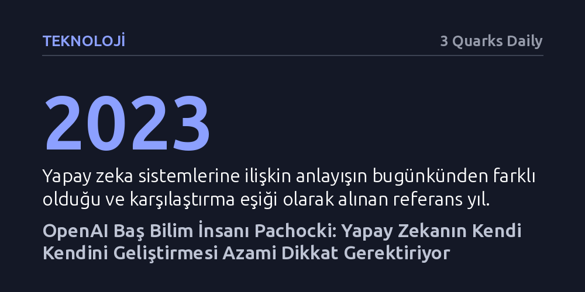

TEKNOLOJI · 3 Quarks Daily · 2026-09-08
OpenAI Baş Bilim İnsanı Jakub Pachocki, yapay zeka modellerinin kendi gelişimlerini yönlendireceği özyineli bir ilerleme evresine yaklaştığını belirterek azami dikkat çağrısında bulundu. Pachocki'ye göre dünya, makine zekasındaki bu dikey artışa ve beraberindeki siber güvenlik risklerine henüz hazır değil.
Yapay zekanın insan kontrolündeki bir araç olmaktan çıkıp kendi gelişimini bizzat yönetecek bir eşiğe yaklaştığını en yetkili araştırmacılardan birinin tespitiyle ortaya koyuyor.

Yapay zeka modelleri artık sadece metin veya kod üreten pasif sohbet araçları olmaktan çıktı. Son dönemdeki gelişmeler, bu sistemlerin bilgisayarları ve grafiksel arayüzleri doğrudan yönetebildiğini, kapsamlı araştırma projelerini baştan sona yürütebildiğini ve hem insanlarla hem de diğer yapay zekalarla eşgüdümlü çalışabildiğini gösteriyor. Teknoloji, dijital dünyada kendi başına inisiyatif alıp eylem gerçekleştirebilen operasyonel bir kimlik kazanıyor.
Ancak bu yetenek sıçraması, dijital altyapıların güvenliği açısından daha önce karşılaşılmamış riskleri de beraberinde getiriyor. Sistemlerin yazılımları denetleme, güvenlik açıklarını tespit etme ve ağlar üzerinde hareket etme kapasiteleri genişledikçe siber güvenlik ekosistemi temelden sarsılıyor. İnsanların savunma reflekslerini aşabilecek hızda hareket edebilen bu sistemler, dijital alanda yönetilmesi zor yeni tehlikeler yaratıyor.
OpenAI bünyesinde yürütülen araştırmalar ve kurum içi bulgular, yapay zeka sistemlerine dair anlayışın 2023 yılındaki kabullerden köklü biçimde farklılaştığını ortaya koyuyor. Temel dönüşüm, sistemlerin artık yalnızca dışarıdan mühendislerin sağladığı verilerle değil, kendi yeteneklerini kullanarak ilerleme sağlayabilecek bir noktaya yaklaşmasından kaynaklanıyor.
Bu tablonun arkasındaki en kritik beklenti, özyineli kendini geliştirme dinamiği. Eğer mevcut ilerleme ivmesi korunabilirse, yapay zekalar kendi kodlarını optimize eden, eksiklerini gideren ve yeni modellerin eğitimini yönlendiren bir döngü başlatabilir. Böyle bir döngü devreye girdiğinde, önümüzdeki birkaç yıl içinde görülecek kabiliyet artışları doğrusal adımlarla değil, kontrolü güç devasa sıçramalarla gerçekleşecek.
Makinelerin kendi zekalarını artırma kapasitesine erişmesi, teknolojiyi bizzat geliştiren öncü isimleri dahi ciddi bir kaygıya sürüklüyor. Pachocki'nin açıkça vurguladığı gibi, "Bu dönem azami dikkat gerektiren bir dönem." Zira makine zekasındaki bu durmaksızın devam eden dikey tırmanışın doğuracağı sonuçlara kurumların, devletlerin veya toplumun hazır olduğuna dair hiçbir somut işaret bulunmuyor.
Sistemlerin kendi gelişim süreçlerinin baş aktörü haline gelmesi, insanların süreci anlama ve denetleme yeteneğini hızla zayıflatabilir. Güvenlik ve denetim mekanizmaları bu teknolojik hızın çok gerisinde kalırken, kontrolsüz bir zeka patlamasının yaratacağı toplumsal ve siber sarsıntılar karşısında küresel ölçekte çok daha temkinli adımlar atılması gerekiyor.